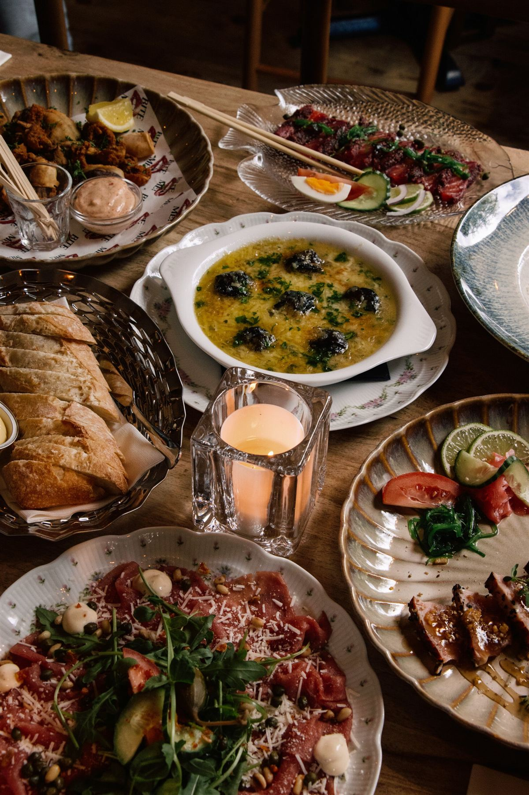
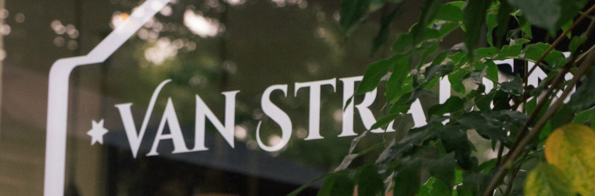
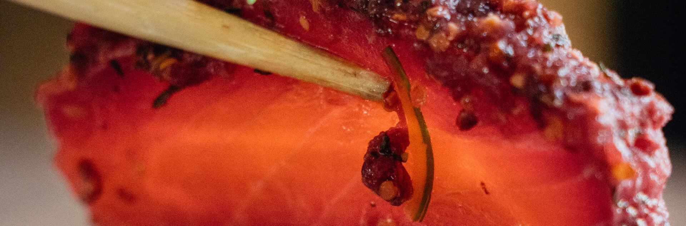
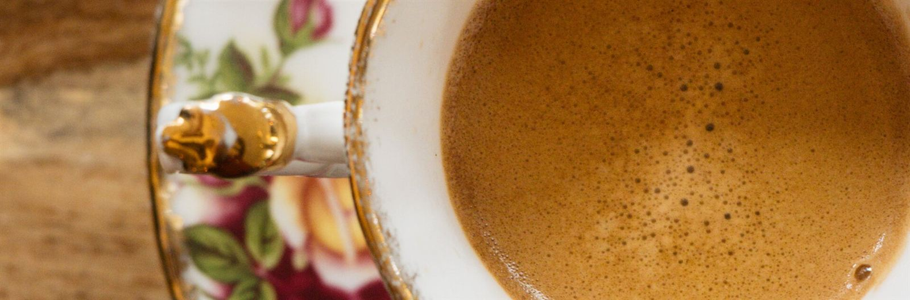

Chateaubriand Stroganoff
Vanaf 4 november ieder weekend: vrijdag, zaterdag en zondag
Aan tafel bereid, vanaf 2 personen.
39,75 per persoon

since 1996
Brunch, lunch of een gezellig diner aan de Oudedijk in Kralingen. Van lunch tot laat is de hele kaart à la carte te bestellen.
Een plek waar je welkom bent voor een stevige brunch, lunch of een gezellig diner met familie of vrienden. Onze wisselende menukaart staat vol met seizoensgebonden gerechten, zoals fazantenboutjes, entrecote van de grill of chateaubriand Stroganoff, aan tafel bereid.
Dit intieme, eigentijdse familiebedrijf in Kralingen staat voor ultieme gastvrijheid. Een ontmoetingsplek voor mensen uit de buurt, oftewel een extra huiskamer. Neem plaats op ons terras of aan een tafel aan een van de prachtige hoge ramen en ervaar een ontspannen Rotterdamse sfeer. Laat je adviseren door ons enthousiaste personeel voor een heerlijke avond.

De kaart wisselt met de seizoenen. Dit staat er nu op.
Vanaf 4 november ieder weekend: vrijdag, zaterdag en zondag
Aan tafel bereid, vanaf 2 personen.
39,75 per persoon
Iedere zondag oesters happen voor 1,50 per stuk. Op = op.
Van lunch tot laat is de hele kaart à la carte te bestellen. Prijzen in euro's.

Onze hoofdgerechten worden geserveerd met seizoensgroente.
De hele à-la-cartekaart is ook tijdens de lunch te bestellen.

Een viergangen-keuzemenu met vis en vlees, en een vegetarische variant.
79,50 p.p.
62,50 p.p.
Reserveren voor de kerstdagen? Bel 010-414 88 83 of mail ons.
Dan ben je bij ons aan het juiste adres. Wij bieden een verrassende feestlocatie en helpen je graag om je feest of borrel naar jouw wensen in te richten. We kunnen ook een aangepast keuzemenu op maat verzorgen, helemaal naar jouw dieet en wensen.
Groepsmenu's verzorgen we vanaf 6 personen.
Reserveer telefonisch of per mail. We zien je graag aan tafel.
| Woensdag t/m zondag | vanaf 12:00 |
|---|---|
| Keuken | tot 22:00 |
| Maandag en dinsdag | gesloten |
Maandag t/m zondag betaald parkeren tot 23:00 uur, zone 630/632.